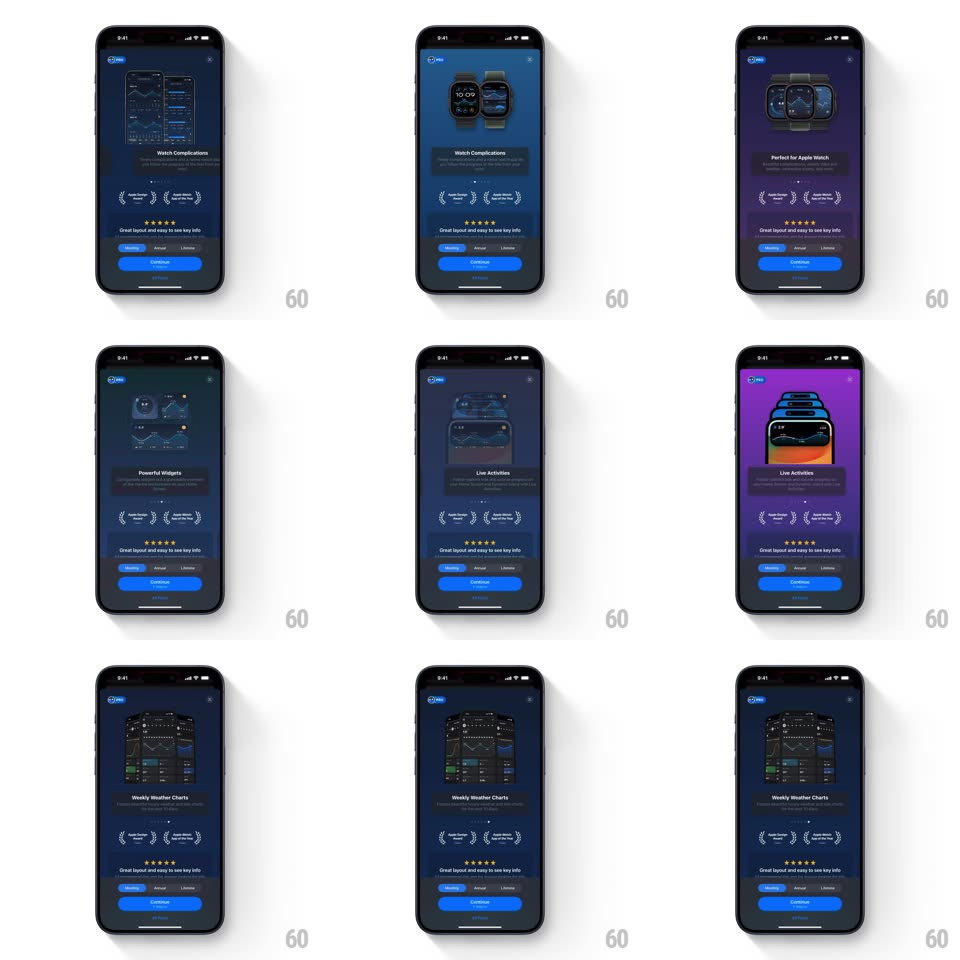

Media
Frame-by-frame

Rebuild this interaction 1:1: Tide Guide's premium onboarding carousel - feature slides (tide tables, Watch complications, widgets, Live Activities, weather charts) slide across while the whole background hue morphs per slide, above a fixed pricing footer.

Rebuild this interaction 1:1: Tide Guide's premium onboarding carousel - feature slides (tide tables, Watch complications, widgets, Live Activities, weather charts) slide across while the whole background hue morphs per slide, above a fixed pricing footer.
## Integration
Integration: stack-agnostic spec - springs given as stiffness/damping, timed motions as duration + curve; map every value to your framework and animation library of choice.
## Scene
Dark paywall carousel: each slide pairs device screenshots (iPhone tide tables, Apple Watch faces, home-screen widgets, Live Activities, weekly weather charts) with a title ("Yearly Tide Tables", "Watch Complications", "Perfect for Apple Watch", "Powerful Widgets", "Live Activities", "Weekly Weather Charts"), two laurel badges, and a 4.8-star quote. Fixed footer: plan pills (Monthly / Annual / Lifetime), a blue Continue button, Restore.
## Motion spec
Pattern: carousel with background color morph, ~500ms per slide.
- Slide: screenshots and title slide horizontally (350ms, ease-out), the new title rising 14px with a fade (250ms).
- Background: the full-screen tint morphs hue per slide (navy -> blue -> purple -> magenta, 500ms, ease-in-out) behind the content.
- Screenshots: each slide's devices settle with a small scale (0.95 -> 1, spring ~320/22).
- Footer: static across slides; selecting a plan pill animates its fill (200ms).
## Calibration
- The hue morph spans the whole background, not a card behind the screenshot.
- Laurel badges and the star quote are identical on every slide - they do not re-animate.
## Reduced motion
Slides crossfade (300ms); the background color steps without the hue sweep.
## Don't miss
- The background keeps morphing even on the settled slide (very slow drift, 20s).
- The pricing footer never slides with the carousel.